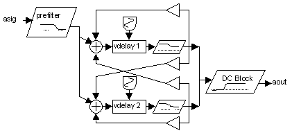
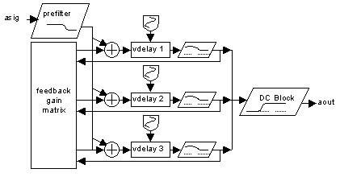
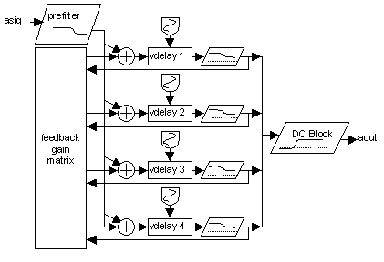
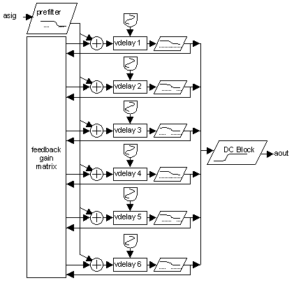

Processing
Features
Departments
Multiple Feedback Reverbs
Hans Mikelson
reverb.orc reverb1.sco reverb2.sco radiance.wav
Reverberation
Reverb is an effect that simulates the dense reflections of sound generated when a sound is produced in an environment like a room or a concert hall. Digital reverbs can be used to add spaciousness to sound. In the last issue I presented several different delay algorithms. One of these, the cross feedback delay, can be extended to create a reverb. One of the most difficult things in creating a dense reverb is generating enough echo density quickly without creating any metallic ringing. Using a large number of delay lines and carefully selecting control parameters makes it possible to create very dense reverbs.
Reverb Configuration
The starting point for this reverb is the cross feedback delay network described in the processing column last time. Before feedback the signal is passed through a high shelf filter with the shelf set low. The high shelf filter suppresses the high frequencies a little more each pass through the delay. The delays are replaced with variable delays which are modulated by very low frequency oscillators. This helps to reduce ringing at high feedback levels by changing the feedback frequency of each delay. The input is prefiltered with a low pass filter and the output is filtered with a DC blocking filter. The DC blocking filter is to remove DC offsets which tend to build up with feedback loops. It can also be used to reduce the "boominess" of some reverbs. Instead of using only positive feedback gains both positive and negative feedback gains are used. I try to use the same number of positive and negative numbers in sort of an orthoganal arrangement in the hopes that this might postpone ringing.

Figure 1 Simple delay line reverb.
The next step is to add more delay lines to the cross feedback delay. The more delay lines that are added to the system the faster the echo density will build.

Figure 2 Multiple delay line reverb with three delay lines.
In this diagram I have added a third delay line. The feedback gains become complicated to draw so I used a single block to represent the feedback gain matrix. The following Csound code gives an idea of what the feedback gain matrix is like:
ig11 = .45*idens ig12 = .33*idens ig13 = -.31*idens ig21 = -.32*idens ig22 = -.35*idens ig23 = .36*idens ig31 = .31*idens ig32 = .35*idens ig33 = .37*idens aa1 vdelay3 asig+ig11*a1+ig12*a2+ig13*a3, atim1, 1000 aa2 vdelay3 asig+ig21*a1+ig22*a2+ig23*a3, atim2, 1000 aa3 vdelay3 asig+ig31*a1+ig32*a2+ig33*a3, atim3, 1000
I multiply the echo density number which comes from the score by random numbers that are close to 1/(number of delay lines) in this case 1/3. Therefore echo density numbers close to one will be close to ringing. I also tossed in a few negative signs at random on the various gains. The gain values are then used in the vdelay3 opcode to scale the different amounts of feedback.
The next instrument is similar but uses four delay lines.

Figure 3 Multiple delay line reverb with four delay lines.
The final reverb uses six delay elements. I have found that six delay lines build echo density rapidly enough for realistic sounding reverbs.

Figure 4 Multiple delay line reverb with six delay lines.
A fragment of the Csound code for the reverb in figure 4 is presented below.
at1 oscil itim1*.05, .50, 1, .2 ; Low frequency oscillators
at2 oscil itim2*.05, .56, 1, .4 ; for the variable delays
at3 oscil itim3*.05, .54, 1, .6 ; are used to prevent "ringing"
at4 oscil itim4*.05, .51, 1, .7 ; If these are set too fast
at5 oscil itim5*.05, .53, 1, .9 ; or too deep there will be
at6 oscil itim6*.05, .55, 1 ; flanging or pitch shifting.
; Variable delay matrix with multiple cross feedback, may need to increase max delay time
aa1 vdelay3 asig+ig11*a1+ig12*a2+ig13*a3+ig14*a4+ig15*a5+ig16*a6, atim1, 1000
aa2 vdelay3 asig+ig21*a1+ig22*a2+ig23*a3+ig24*a4+ig25*a5+ig26*a6, atim2, 1000
aa3 vdelay3 asig+ig31*a1+ig32*a2+ig33*a3+ig34*a4+ig35*a5+ig36*a6, atim3, 1000
aa4 vdelay3 asig+ig41*a1+ig42*a2+ig43*a3+ig44*a4+ig45*a5+ig46*a6, atim4, 1000
aa5 vdelay3 asig+ig51*a1+ig52*a2+ig53*a3+ig54*a4+ig55*a5+ig56*a6, atim5, 1000
aa6 vdelay3 asig+ig61*a1+ig62*a2+ig63*a3+ig64*a4+ig65*a5+ig66*a6, atim6, 1000
; pareq set to high shelf mode
a1 pareq aa1, ifc1, iv1, iq, 2
a2 pareq aa2, ifc2, iv2, iq, 2
a3 pareq aa3, ifc3, iv3, iq, 2
a4 pareq aa4, ifc4, iv4, iq, 2
a5 pareq aa5, ifc5, iv5, iq, 2
a6 pareq aa6, ifc6, iv6, iq, 2
aout butterhp asig*isa+(a1+a2+a3+a4+a5+a6)*iamp, 20 ; Block the DC
zaw aout, ioutch ; Write to the channel
Usability Issues
When I first started using these instruments I would enter all of the feedback gains and delay times in the score i-statement. This became cumbersome so I started using random numbers based on the input time for the delay times and basing the feedback gains on a single density number. The times given are in milliseconds but the time of the reverberation depends on both the time input and the density number. The parameter SigAmp determines the amount of the original input signal that is to be mixed with the output signal.
; Sta Dur Amp Time Dens InCh OutCh Fc PreFco SigAmp i50 0 6 .4 17 .51 1 2 .92 17000 0
To make larger sound environments such as a concert hall or a tunnel the zak system is used to link several of the above reverb units in series.
; Sta Dur Amp Time Dens InCh OutCh Fc PreFco SigAmp i50 0 6 .4 17 .51 1 2 .92 17000 0 i50 0 6 .5 33 .75 2 3 .83 14000 1 i50 0 6 .7 73 .85 3 4 .63 10000 1 i50 0 6 .7 71 .84 3 5 .63 10000 1
InCh and OutCh refer to the input and output zak channels. In the score above the first i-statement reads from channel 1 and outputs to channel 2. The original sound is not included in the output. The second i-statement takes the ouput from the first as its input. This time the input is mixed to the output.This helps to build echo density and allows for generation of early reflections. The output from the second i-statement is fed into both the third and fourth i-statements. The third and fourth i-statements have different delay times and densities creating a stereo effect.
I have included a sample file which should work with the second score, reverb2.sco. You should be able to use your own sound files by changing the following line in instrument 11.
asig diskin "radiance.wav", 1 ; Read "soundin" file
Links
There are many sites on the web which describe different reverb implementations. Following are few of the better links.
http://www.harmony-central.com/Effects/Articles/Reverb/ This site is good introduction to reverb.
http://home1.gte.net/dhillos/camra/ch3.html A web search turned up this site.
http://www-ccrma.stanford.edu/~jos/cfdn/node16.html I have not studied these papers yet but they look good.
http://sound.media.mit.edu/people/billg/projects.html Bill Gardner's masters thesis is a classic and is available online from his web site. Look for the virtual acoustic room.